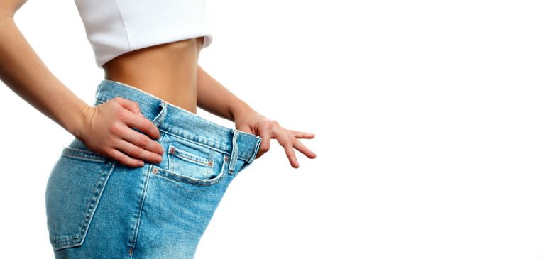

¿Cuánto tiempo se tarda en notar la pérdida de peso?
 Saltar al contenido Nutrición Alimentos Suplementos Dietética Pérdida de peso Dietas Salud Obesidad Enfermedades Alternar la navegación Alternar la navegación Nutrición Alimentos Suplementos Dietética Pérdida de peso Dietas Salud Obesidad Enfermedades¿Cuánto tiempo lleva notar la pérdida de peso?
Nutricuerpos Pérdida de peso 15 de febrero de 2020 16 de mayo de 2020El tiempo que se tarda en ver y notar la pérdida de peso y que otros noten los resultados de pérdida de peso puede variar de una persona a otra.
Muchos factores, cómo tu tamaño inicial y tu plan de alimentación , pueden marcar una gran diferencia. Sin embargo, en general, muchas personas pueden ver resultados en dos o tres semanas cuando hacen las cosas correctamente y se apegan a su plan.
Indice mostrar 1. ¿Cuándo verás resultados de pérdida de peso? 2. Tamaño inicial 3. Tipo de dieta 4. Ingesta de carbohidratos 5. Frecuencia de pesaje 6. Método de medida 7. ¿Cuánto tiempo hasta que cambie el tamaño de mi ropa? 8. Ejemplo de línea de tiempo para notar la pérdida de peso 9. Conclusiones¿Cuándo verás resultados de pérdida de peso?
Chica midiéndose la cintura con cinta métricaHay muchos factores diferentes que afectan la rapidez con la que verás resultados de ejercicio o dieta.
Desafortunadamente, no hay una respuesta clara sobre cuán pronto se mostrará tu pérdida de peso . Estas son algunas de las razones por las que los resultados pueden variar.
Tamaño inicial
Tu tamaño inicial afectará la rapidez con que notes los resultados. Por ejemplo, si tu peso inicial cae dentro del rango de obesidad en el índice de masa corporal (IMC) , no es imposible que tu peso cambie hasta tres y cuatro kilos en un solo día.
Pero incluso esa cantidad de pérdida de peso puede no ser muy notable en un marco más grande.
Si eres una mujer que tiene una complexión pequeña y un IMC más bajo, por otro lado, perder esos mismos kilos puede ser la diferencia entre varios tamaños de ropa. Sin embargo, sería casi imposible (y muy inseguro) que una mujer de ese tamaño pierda tanto peso en un día.
Si comienzas tu programa con un IMC inicial más bajo, es probable que tengas menos peso que perder y probablemente disminuya a un ritmo más lento de aproximadamente uno o dos kilos por semana.
Cuando tu tamaño corporal inicial es más grande, es probable que pierdas más peso a un ritmo más rápido, especialmente en los primeros días de tu programa.
Tipo de dieta
Algunos planes de dieta están diseñados para incluir una fase inicial que resulta en una pérdida de peso acelerada.
La dieta Atkins, y muchos otros programas populares incluyen un inicio rápido durante una o dos semanas cuando la restricción de alimentos es más intensa y se pierde más peso. Aunque intentamos no abogar por dietas de moda que no crean adherencia y suelen no ser muy correctas.
Sin embargo, la pérdida de peso experimentada durante estas fases a menudo se atribuye a la pérdida de agua por la restricción de carbohidratos , no a la pérdida de grasa.
Ingesta de carbohidratos
La restricción de carbohidratos puede conducir a una rápida pérdida de agua .
Tu cuerpo necesita agua para almacenar carbohidratos. Cuando reduces sustancialmente la cantidad de carbohidratos que consumes, también pierdes el agua necesaria para almacenarlo.
Derramar el exceso de agua te ayuda a sentirte y verte más delgado a pesar de que la cantidad de grasa corporal que llevas no ha cambiado.
Para algunas personas, la pérdida de peso del agua puede marcar la diferencia entre dos tallas de ropa.
Pero perder peso de agua es diferente de perder grasa . Si bien reducir los carbohidratos puede ser un enfoque inteligente para la pérdida de peso, debe ser parte de un programa integral de alimentación saludable para que ocurra una pérdida de peso sostenida.
Frecuencia de pesaje
Es más probable que veas grandes cambios en el número en la báscula si te pesas con menos frecuencia. ¿Por qué? Porque si te pesas una vez a la semana, tu nuevo peso reflejará la cantidad total de kilos perdidos durante siete días .
Si te pesas todos los días, por otro lado, es probable que veas pequeños cambios e incluso puedes ver un aumento de peso . Esta experiencia puede hacer que parezca que estás perdiendo peso lentamente.
Hay muchas razones por las que tu peso fluctúa diariamente , y no siempre es el resultado de lo bien que has seguido tu programa de pérdida de peso
Método de medida
Cuando comienzas un programa de pérdida de peso, tu objetivo puede ser adaptarte a una talla de ropa más pequeña. O tal vez el número en la báscula significa más para ti.
Otros quieren ver cambios en cierta parte del cuerpo, como muslos más delgados o una barriga más plana.
En definitiva, todos queremos sentirnos bien en nuestra piel, pero la forma en que medimos el progreso puede afectar la rapidez con que vemos resultados .
En la mayoría de los casos, es probable que primero veas cambios en la báscula, especialmente si tienes una báscula de alta tecnología.
Una báscula digital puede detectar pequeños cambios en tu peso corporal total (incluso fracciones de un kilo) que pueden ser demasiado pequeñas para notar en una sola parte aislada de tu cuerpo.
Después, es probable que veas cambios en tu ropa . Tu tamaño real no cambiará de inmediato, pero notarás que tu ropa comienza a ajustarse de manera diferente.
Es probable que notes este cambio antes si normalmente usas ropa más ajustada. Eventualmente, tu pérdida de peso total puede resultar en un cambio en el tamaño de tu ropa .
Por último, verás cambios en cada parte del cuerpo. Si bien estos cambios ocurren durante todo el proceso de pérdida de peso, es posible que no notes muslos más delgados, por ejemplo, hasta que hayas perdido varios kilos.
Es más probable que veas cambios en la parte del cuerpo antes si tu rutina incluye un programa de ejercicios.
El ejercicio puede cambiar la forma de tu cuerpo. Recuerda, también, que el aumento de la masa muscular puede resultar en un aumento de peso en la báscula incluso cuando pierdes grasa corporal, otra razón para adoptar un enfoque holístico para «medir» tus resultados de pérdida de peso en lugar de centrarte en un número.
¿Cuánto tiempo hasta que cambie el tamaño de mi ropa?
Cambio de talla en la ropa al bajar de pesoMuchas personas que trabajan para perder peso esperan con ansias el día en que van a la tienda y ven que entran en una talla de ropa más pequeña.
Para algunos, este es el momento en que sienten que todo su arduo trabajo ha valido la pena. Entonces, ¿cuánto tiempo lleva antes de disfrutar de esa experiencia especial? Nuevamente, varía, y la altura juega un papel importante.
Si eres una mujer menuda y bajita, una pérdida de peso de 10 kilos puede significar que has perdido hasta el 10% de tu peso corporal.
Esa cantidad de pérdida de peso será muy notable y puede cambiar el tamaño de tu ropa hasta dos tallas.
Pero si eres una mujer muy alta y atlética, una pérdida de 10 kilos probablemente no se notarán mucho y es posible que no cambie el tamaño de tu ropa.
Muchos expertos dicen que debes esperar cambiar una talla de ropa con cada 10 a 12 kilos de pérdida de peso.
Además, generalmente no perdemos peso de manera uniforme en todo el cuerpo. Por ejemplo, el tamaño de tu sostén puede ser más pequeño que el tamaño de tu pantalón.
En última instancia, el tamaño de tu ropa depende de la medida de cada parte del cuerpo en particular:
Para cambiar el tamaño de tu pantalón , debes reducir el tamaño de tu cintura en aproximadamente 2 a 2,5 cm y el tamaño de tu cadera en la misma cantidad. Para cambiar tu talla superior , necesitas reducir la medida de tu busto y cintura en aproximadamente dos cm en tamaños más pequeños y 2,5 cm en tallas medianas y más grandes. Para cambiar el tamaño de tu vestido , debes reducir las medidas de cintura, busto y cadera en aproximadamente 1,5 cm cada una, dependiendo del estilo del vestido y el ajuste que prefieras.Ejemplo de línea de tiempo para notar la pérdida de peso
Recuerda que una nueva talla de ropa y un cuerpo más pequeño no son los únicos beneficios de la pérdida de peso , estos son algunos cambios en la pérdida de peso que probablemente verás.
A continuación se muestra un cronograma de muestra de cuándo es probable que veas estos cambios si te adhieres a un plan de alimentación saludable bajo en calorías y un programa de ejercicio moderado.
Semana uno: la mayoría de las personas comienzan a ver algún cambio en la bascula (generalmente hasta cuatro kilos) durante esta semana. Es probable que te sientas mejor, pero no veras cambios importantes en tu cuerpo. Semana dos: durante la segunda semana, es probable que comiences a ver cambios en la apariencia y sensación de tu cuerpo. El ejercicio comienza a sentirse más fácil y tu ropa comenzará a sentirse más floja. Semana tres: Esto es a menudo cuando comienzas a sentir el impulso en tu viaje de pérdida de peso. Si has sido consistente en tu plan, tu cuerpo responderá bien y comenzarás a sentir que el programa que éstas siguiendo es un éxito. Semana cuatro: en este momento, es muy posible que hayas perdido suficiente peso (de manera segura) para tener una talla de ropa diferente. Después de la cuarta semana: tu nuevo plan de alimentación comienza a parecer más una rutina normal. Dependiendo de la cantidad de peso que tengas que perder, puedes comenzar a regresar a un plan de alimentación ajustado para mantener el peso.¿Quieres ver resultados de pérdida de peso más rápido? Hay formas de sobrealimentar tu dieta para que el número en la báscula cambie más rápidamente, pero bajo nuestro punto de vista no es lo más adecuado. Recuerda despacito y con buena letra.
Conclusiones
En Nutricuerpos, apoyamos una alimentación nutritiva y ejercicio regular porque queremos que nuestros lectores estén saludables.
Busca los resultados de tu pérdida de peso después de algunas semanas de dieta y ejercicio, pero se amable y paciente contigo mismo.
El cuerpo de cada persona es único y la velocidad a la que pierdes peso puede ser diferente a la de otra persona.
Mantente constante y recuerda los muchos beneficios de alcanzar y mantener un peso saludable para mantenerte motivado durante la duración de tu viaje.
Referencias
Estimated calorie requirements. ExRx. Murray B, Rosenbloom C. Fundamentals of glycogen metabolism for coaches and athletes. Nutr Rev. 2018;76(4):243-259. doi:10.1093/nutrit/nuy001 Why you shouldn’t weigh yourself every single day. Cleveland Clinic. 2019. How to measure your body for clothing sizes. Size Charter. Losing weight. Centers for Disease Control and Prevention. 2018. Feig EH, Lowe MR. Variability in Weight Change Early in Behavioral Weight Loss Treatment: Theoretical and Clinical Implications. Obesity (Silver Spring). 2017;25(9):1509-1515. doi:10.1002/oby.21925 Voils CI, Olsen MK, Gierisch JM, et al. Maintenance of Weight Loss After Initiation of Nutrition Training: A Randomized Trial. Ann Intern Med. 2017;166(7):463-471. doi:10.7326/M16-2160Otros recursos
Murray, B., & Rosenbloom, C. (2018). Fundamentals of glycogen metabolism for coaches and athletes . Nutrition reviews , 76 (4), 243–259. doi:10.1093/nutrit/nuy001 Re, D. E., & Rule, N. O. (2016). Heavy Matters: The Relationship Between Just Noticeable Differences in Perceptions of Facial Adiposity and Facial Attractiveness . Social Psychological and Personality Science , 7 (1), 69–76. doi:10.1177/1948550615599829 Comparte si te ha gustado: